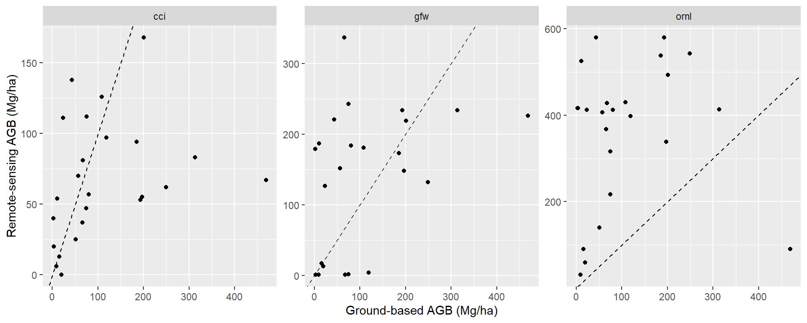

Code
library(terra)
library(sf)
library(docxtractr)
library(tidyverse)
library(readxl)library(terra)
library(sf)
library(docxtractr)
library(tidyverse)
library(readxl)area <- list.files("data/umrbpl/", full.names = TRUE, pattern = "shp$") |>
read_sf() |>
st_transform(crs = "EPSG:4326")# NGP project
ngp <- list.files("data/inventories/", "Carbon densities", full.names = TRUE) |>
read_docx() |>
docx_extract_tbl(1) |>
set_names(c("plot",
paste0(rep(c("agb", "agc"), 2),
rep(c("_h", ""), each=2)))) |>
filter(!grepl("Average|Transect", plot)) |>
mutate(plot = paste0(rep(c(1:23, 27), each = 3), "_", rep(1:3, 24))) |>
mutate(across(contains("ag"), function(x)
ifelse(is.na(as.numeric(x)), 0, as.numeric(x))))
location_ngp <-
read_excel("data/inventories/Carbon Stock and Sequestration Data.xlsx",
sheet = "NGP_Carbon Assessment", range = "B3:E84") |>
set_names(c("plot", "x", "y", "elev")) |>
mutate(transect = rep(1:27, each=3)) |>
mutate(plot = paste(transect, plot, sep="_")) |>
group_by(transect) |>
# correct problematic x and y values
mutate(x = ifelse(abs(x-median(x)) > 1e4, median(x), x),
y = ifelse(abs(y-median(y)) > 1e4, median(y), y))
df_ngp <- left_join(ngp, location_ngp) |>
separate(plot, c("transect", "plot")) |>
group_by(transect) |>
summarise(agb = mean(agb_h), x = round(mean(x)), y = round(mean(y)))
sf_ngp <- df_ngp |>
st_as_sf(coords = c("x", "y"), crs = 32651) |> # check which CRS was used!!
st_transform(crs = "EPSG:4326")
# location of BAMS plots
location_bams <-
read_excel("data/inventories/Carbon Stock and Sequestration Data.xlsx",
sheet = "BAMS_Data", range = "A2:C38") |>
rename_with(tolower) |>
mutate(quadrat = rep(1:9, each = 4)) |>
separate(coordinates, c("x", "y")) |>
mutate(across(c("x", "y"), as.numeric)) |>
group_by(quadrat) |>
summarise(x = mean(x), y = mean(y))
## location of FRA plot 105
sf_fra <- st_read("data/inventories/Subplots_Tract105/Subplots_Tract105.shp") |>
mutate(dataset = "fra")Reading layer `Subplots_Tract105' from data source
`D:\github\marikina_carbon\data\inventories\Subplots_Tract105\Subplots_Tract105.shp'
using driver `ESRI Shapefile'
Simple feature collection with 4 features and 3 fields
Geometry type: POLYGON
Dimension: XY
Bounding box: xmin: 311861.2 ymin: 1631644 xmax: 312383.6 ymax: 1632167
Projected CRS: WGS 84 / UTM zone 51Nsf_all <-
bind_rows(list(ngp = location_ngp, bams = location_bams), .id = "dataset") |>
st_as_sf(coords = c("x", "y"), crs = 32651) |> # check which CRS was used!!
bind_rows(sf_fra) |>
st_transform(crs = "EPSG:4326")
ggplot() +
geom_sf(data = area) +
geom_sf(data = sf_all, aes(col=dataset))
diagnostic <- function(x, y) {
rmse <- signif(sqrt(mean((x - y)^2, na.rm = TRUE)), 3)
mape <- signif(mean(abs((x - y) / x), na.rm = TRUE) * 100, 3)
r2 <- signif(cor(x, y, use = "complete.obs")^2, 2)
bias <- signif(mean(x - y, na.rm = TRUE), 3)
cat(
"RMSE:", rmse,
"Mg/ha\nMAPE:", mape,
"%\nR²:", r2, "\nBias:",
bias, "Mg/ha"
)
}We match the year of the inventory to the closest year of the map.
cci <- list.files("data/biomass/", "AGB-MERGED", full.names = TRUE) |>
rast()
names(cci) <- do.call(cbind, strsplit(names(cci), "-"))[7, ]
# check inventory year
df_ngp$year <- 2010
df_ngp$cci_carbon <- sapply(seq_len(nrow(df_ngp)), function(i) {
closest <- which.min(abs(as.numeric(names(cci)) - df_ngp$year[i]))
terra::extract(cci[[closest]], sf_ngp[i,])[,2]
})
diagnostic(df_ngp$agb, df_ngp$cci_carbon)RMSE: 116 Mg/ha
MAPE: 164 %
R²: 0.08
Bias: 42.4 Mg/hagfw <- list.files("data/biomass/", "harris", full.names = TRUE) |>
rast()
df_ngp$gfw_carbon <- terra::extract(gfw, sf_ngp)[, 2]
diagnostic(df_ngp$agb, df_ngp$gfw_carbon)RMSE: 121 Mg/ha
MAPE: 502 %
R²: 0.15
Bias: -27.5 Mg/haornl <- list.files("data/biomass/", "aboveground", full.names = TRUE) |>
rast()
df_ngp$ornl_carbon <- terra::extract(ornl, sf_ngp)[, 2]
diagnostic(df_ngp$agb, df_ngp$ornl_carbon)RMSE: 316 Mg/ha
MAPE: 1740 %
R²: 0.0053
Bias: -250 Mg/hadf_ngp |>
pivot_longer(cols = contains("_carbon")) |>
mutate(name = gsub("_carbon", "", name)) |>
ggplot(aes(agb, value)) +
geom_point() +
facet_wrap(~name, scale = "free") +
labs(x = "Ground-based AGB (Mg/ha)", y = "Remote-sensing AGB (Mg/ha)") +
geom_abline(slope=1, intercept=0, lty=2)
The final map chosen is …